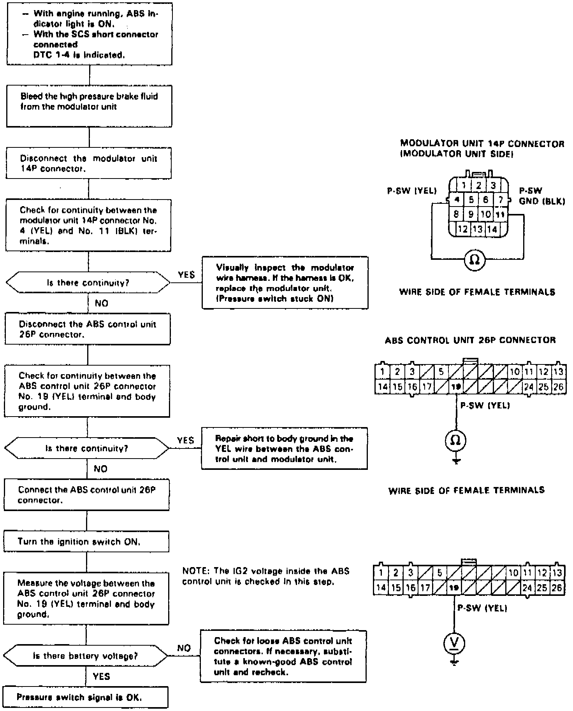

DTC 1-4
Fig. 30 Code 1-4: Pressure Switch:

Diagnostic Trouble Code (DTC~ 1-4: Pressure Switch Diagnosis
The ABS control unit momentarily activates the outlet solenoid valve and counts the number of times that the pressure switch signal is ON during the initial diagnosis.
When the ABS control unit does not detect the pressure switch OFF signal at all when the engine is started and stopped repeatedly it keeps the ABS indicator light on. The count of the pressure switch ON signals is reset when the ABS control unit detects the pressure switch OFF signal.
Possible causes:
- Short to body ground between the ABS control unit and pressure switch
- Pressure switch stuck ON
- Faulty ABS control unit